Excerpts for Zach's ears; answers save only in the viewer's browser. Each clip starts 2 s before the place in question and ends 2 s after it; a long video row plays 10 s around its middle frame. Type in an answer cell; it stays in this browser.
1. Total Abstraction, 2023: the 24 bars the score marks ambiguous
ta-01
Is there a held tone at A4 here, and is A4 its octave? The board microphone holds A4 +22 cents for 1.80 s; the room microphone (OBS) holds only the octave below.
Section 3, recitation, bar 5 (from 1868 s); board 1873.72 to 1875.52 s, -29.8 dB. The tone starts 2 s into the clip. CHECK.md: "The tone is on the board but not confirmed by a second microphone, or its octave is not settled."
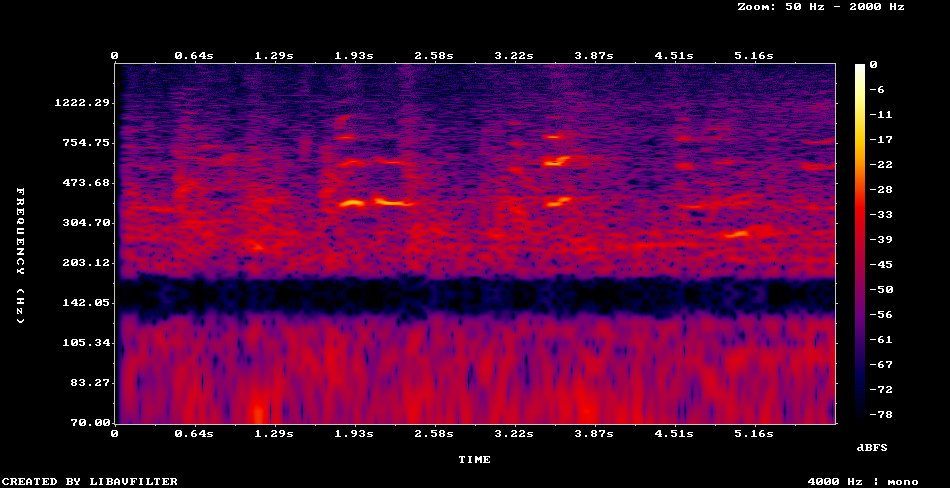
ta-02
Is there a held tone at G3 here, and is G3 its octave? The board microphone holds G3 −19 cents for 1.50 s; the room microphone (OBS) holds only the octave above.
Section 3, recitation, bar 7 (from 1884 s); board 1885.47 to 1886.97 s, -22.4 dB. The tone starts 2 s into the clip. CHECK.md: "The tone is on the board but not confirmed by a second microphone, or its octave is not settled."
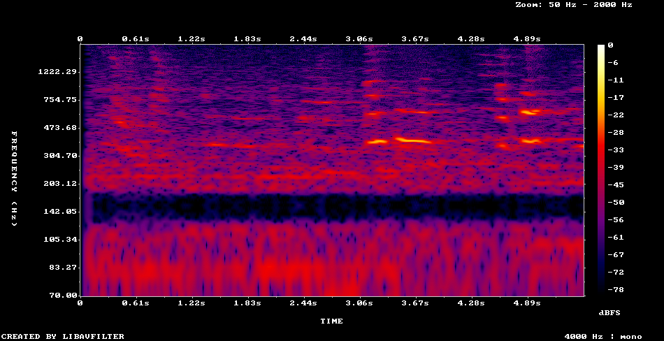
ta-03
Is there a held tone at C4 here, and is C4 its octave? The board microphone holds C4 +6 cents for 1.85 s; the room microphone (OBS) holds nothing there.
Section 3, recitation, bar 9 (from 1900 s); board 1905.67 to 1907.52 s, -25.1 dB. The tone starts 2 s into the clip. CHECK.md: "The tone is on the board but not confirmed by a second microphone, or its octave is not settled."
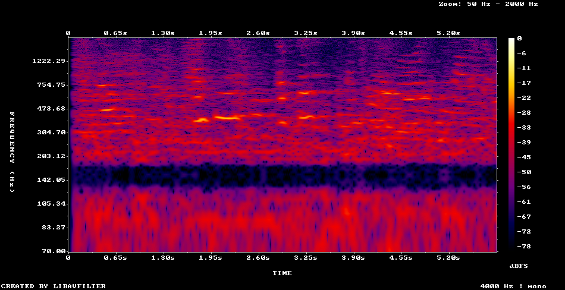
ta-04
Is there a held tone at B♭4 here, and is B♭4 its octave? The board microphone holds B♭4 +8 cents for 1.60 s; the room microphone (OBS) holds nothing there.
Section 4, recitation, bar 11 (from 1914 s); board 1915.17 to 1916.77 s, -23.4 dB. The tone starts 2 s into the clip. CHECK.md: "The tone is on the board but not confirmed by a second microphone, or its octave is not settled."
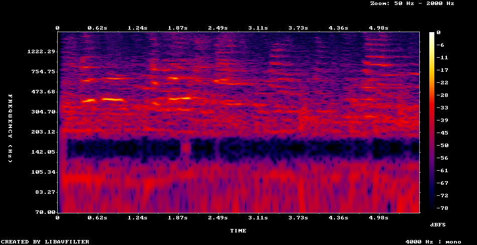
ta-05
Is there a held tone at F♯4 here, and is F♯4 its octave? The board microphone holds F♯4 +12 cents for 1.50 s; the room microphone (OBS) holds only the octave above.
Section 4, recitation, bar 11 (from 1914 s); board 1917.97 to 1919.47 s, -22.1 dB. The tone starts 2 s into the clip. CHECK.md: "The tone is on the board but not confirmed by a second microphone, or its octave is not settled."
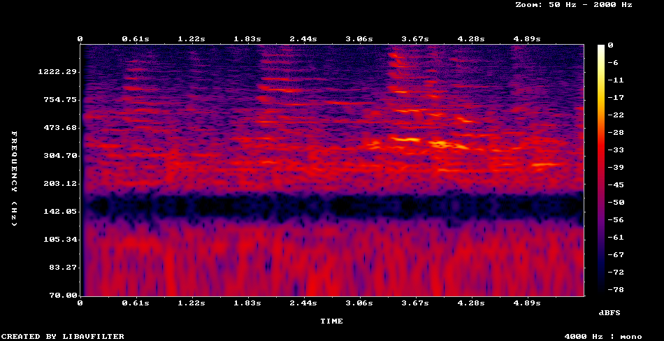
ta-06
Is there a held tone at B4 here, and is B4 its octave? The board microphone holds B4 +33 cents for 1.50 s; the room microphone (OBS) holds nothing there.
Section 4, recitation, bar 11 (from 1914 s); board 1921.22 to 1922.72 s, -30.2 dB. The tone starts 2 s into the clip. CHECK.md: "The tone is on the board but not confirmed by a second microphone, or its octave is not settled."
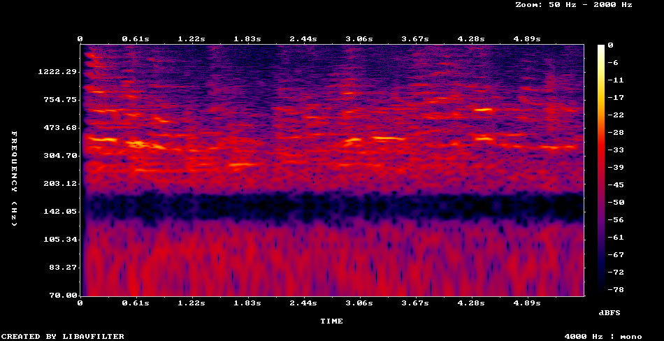
ta-07
Is there a held tone at A3 here, and is A3 its octave? The board microphone holds A3 −13 cents for 1.55 s; the room microphone (OBS) holds only the octave above.
Section 4, recitation, bar 12 (from 1922 s); board 1929.27 to 1930.82 s, -20.4 dB. The tone starts 2 s into the clip. CHECK.md: "The tone is on the board but not confirmed by a second microphone, or its octave is not settled."
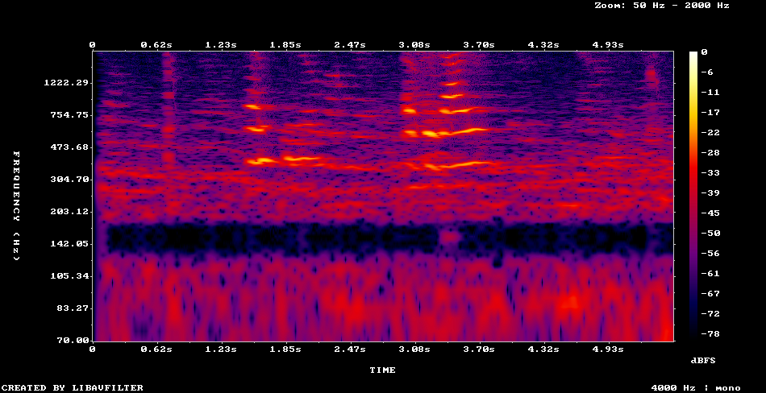
ta-08
Is there a held tone at F♯5 here, and is F♯5 its octave? The board microphone holds F♯5 +19 cents for 1.85 s; the room microphone (OBS) holds nothing there.
Section 4, recitation, bar 17 (from 1962 s); board 1965.82 to 1967.67 s, -30.3 dB. The tone starts 2 s into the clip. CHECK.md: "The tone is on the board but not confirmed by a second microphone, or its octave is not settled."
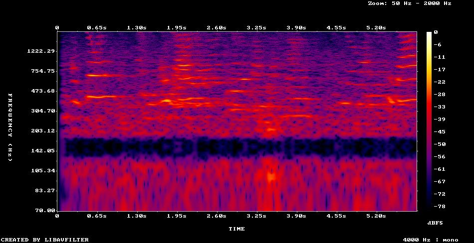
ta-09
Is there a held tone at C♯4 here, and is C♯4 its octave? The board microphone holds C♯4 −17 cents for 1.65 s; the room microphone (OBS) holds nothing there.
Section 4, recitation, bar 21 (from 1994 s); board 1998.37 to 2000.02 s, -27.5 dB. The tone starts 2 s into the clip. CHECK.md: "The tone is on the board but not confirmed by a second microphone, or its octave is not settled."
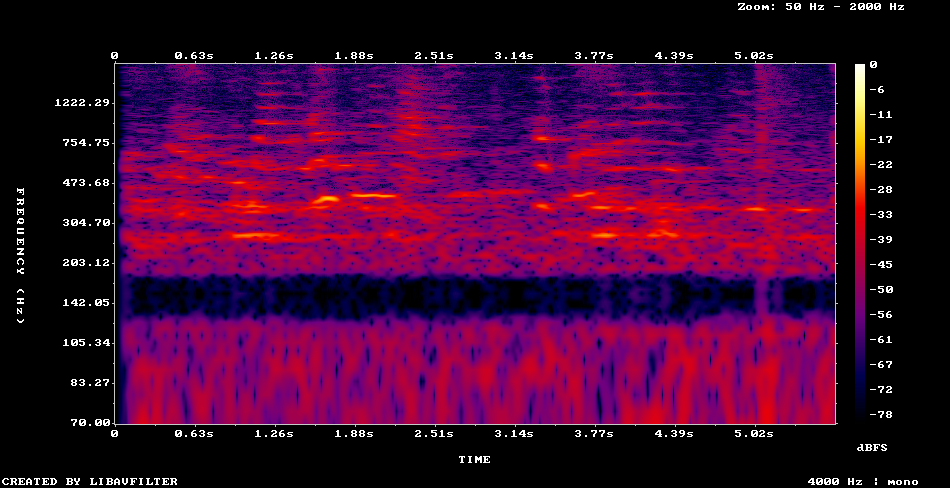
ta-10
Is there a held tone at E♭4 here, and is E♭4 its octave? The board microphone holds E♭4 +48 cents for 2.00 s; the room microphone (OBS) holds nothing there.
Section 4, recitation, bar 22 (from 2002 s); board 2005.07 to 2007.07 s, -29.4 dB. The tone starts 2 s into the clip. CHECK.md: "The tone is on the board but not confirmed by a second microphone, or its octave is not settled."
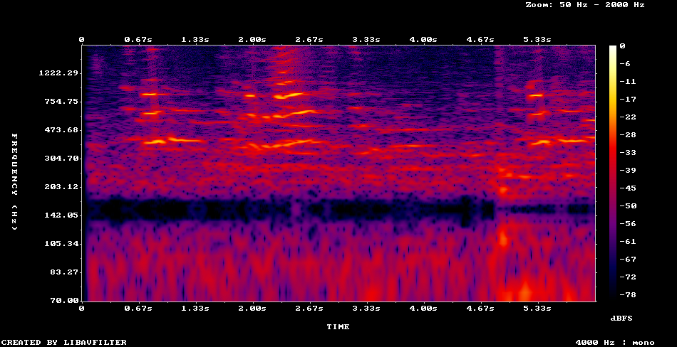
ta-11
Is there a held tone at F♯5 here, and is F♯5 its octave? The board microphone holds F♯5 −4 cents for 1.70 s; the room microphone (OBS) holds nothing there.
Section 4, recitation, bar 24 (from 2018 s); board 2018.07 to 2019.77 s, -29.2 dB. The tone starts 2 s into the clip. CHECK.md: "The tone is on the board but not confirmed by a second microphone, or its octave is not settled."
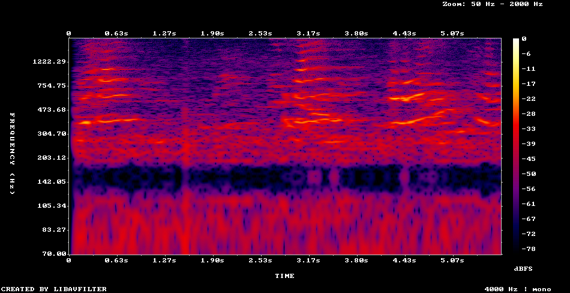
ta-12
Is there a held tone at D5 here, and is D5 its octave? The board microphone holds D5 −6 cents for 1.55 s; the room microphone (OBS) holds nothing there.
Section 4, recitation, bar 26 (from 2034 s); board 2035.17 to 2036.72 s, -26.0 dB. The tone starts 2 s into the clip. CHECK.md: "The tone is on the board but not confirmed by a second microphone, or its octave is not settled."
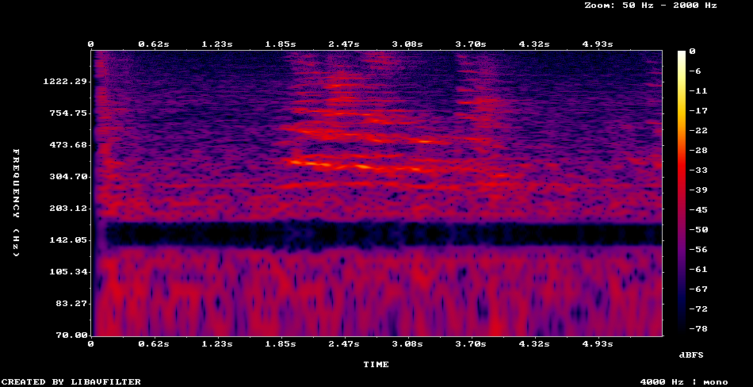
ta-13
Is there a held tone at A4 here, and is A4 its octave? The board microphone holds A4 +23 cents for 2.55 s; the room microphone (OBS) holds nothing there.
Section 5, recitation, bar 29 (from 2057 s); board 2060.42 to 2062.97 s, -25.6 dB. The tone starts 2 s into the clip. CHECK.md: "The tone is on the board but not confirmed by a second microphone, or its octave is not settled."
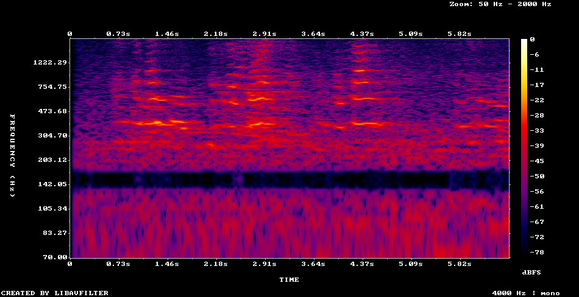
ta-14
Is there a held tone at D5 here, and is D5 its octave? The board microphone holds D5 +6 cents for 1.75 s; the room microphone (OBS) holds only the octave below.
Section 6a, homophony, bar 4 (from 2078 s); board 2080.92 to 2082.67 s, -27.4 dB. The tone starts 2 s into the clip. CHECK.md: "The tone is on the board but not confirmed by a second microphone, or its octave is not settled."
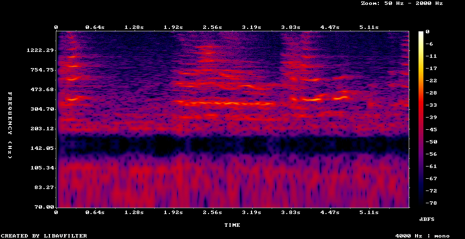
ta-15
Is there a held tone at B♭4 here, and is B♭4 its octave? The board microphone holds B♭4 −31 cents for 1.55 s; the room microphone (OBS) holds only the octave above.
Section 6a, homophony, bar 13 (from 2114 s); board 2115.27 to 2116.82 s, -26.7 dB. The tone starts 2 s into the clip. CHECK.md: "The tone is on the board but not confirmed by a second microphone, or its octave is not settled."
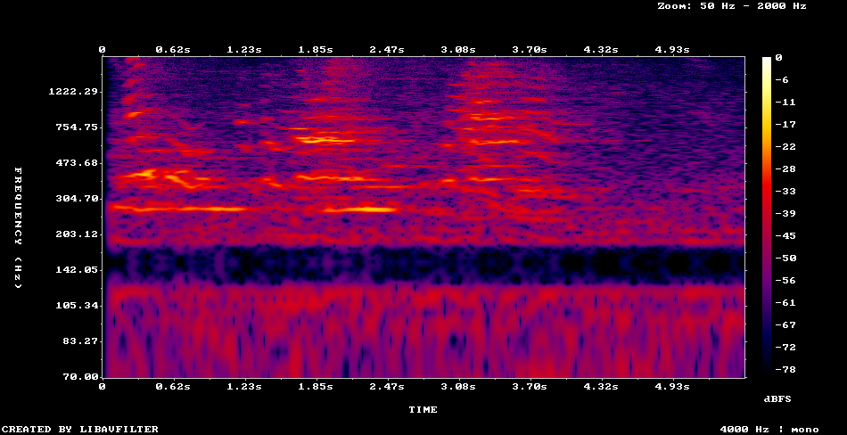
ta-16
Is there a held tone at G3 here, and is G3 its octave? The board microphone holds G3 −4 cents for 3.80 s; the room microphone (OBS) holds nothing there.
Section 6a, homophony, bar 14 (from 2118 s); board 2121.17 to 2124.97 s, -26.3 dB. The tone starts 2 s into the clip. CHECK.md: "The tone is on the board but not confirmed by a second microphone, or its octave is not settled."
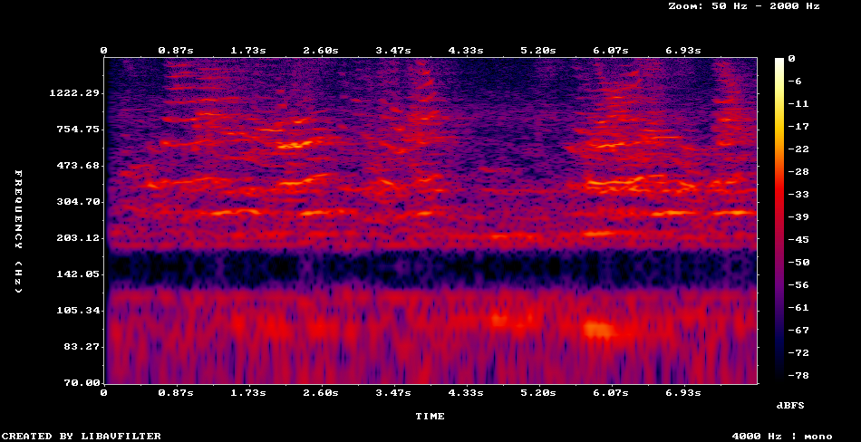
ta-17
Is there a held tone at G3 here, and is G3 its octave? The board microphone holds G3 +21 cents for 2.00 s; the room microphone (OBS) holds only the octave above.
Section 6a, homophony, bar 15 (from 2122 s); board 2125.32 to 2127.32 s, -22.1 dB. The tone starts 2 s into the clip. CHECK.md: "The tone is on the board but not confirmed by a second microphone, or its octave is not settled."
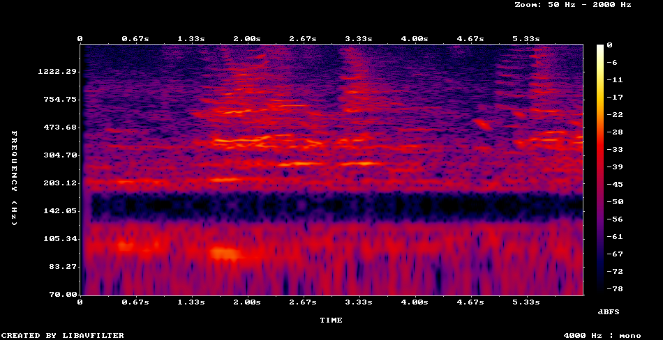
ta-18
Is there a held tone at A3 here, and is A3 its octave? The board microphone holds A3 −21 cents for 1.65 s; the room microphone (OBS) holds only the octave above.
Section 6b, homophony, bar 23 (from 2151 s); board 2153.82 to 2155.47 s, -29.3 dB. The tone starts 2 s into the clip. CHECK.md: "The tone is on the board but not confirmed by a second microphone, or its octave is not settled."
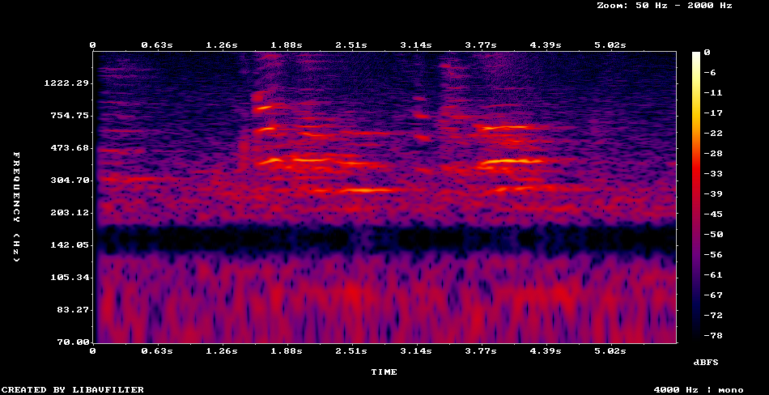
ta-19
Is there a held tone at G♯3 here, and is G♯3 its octave? The board microphone holds G♯3 +6 cents for 1.55 s; the room microphone (OBS) holds only the octave above.
Section 8a, consonants, bar 4 (from 2198 s); board 2198.72 to 2200.27 s, -22.7 dB. The tone starts 2 s into the clip. CHECK.md: "The tone is on the board but not confirmed by a second microphone, or its octave is not settled."
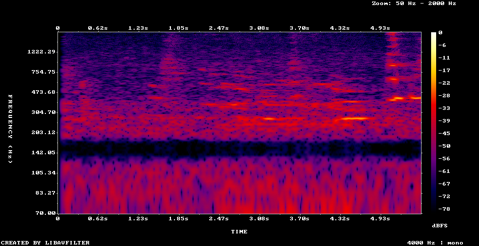
ta-20
Is there a held tone at D5 here, and is D5 its octave? The board microphone holds D5 +16 cents for 1.70 s; the room microphone (OBS) holds nothing there.
Section 8a, consonants, bar 7 (from 2210 s); board 2211.67 to 2213.37 s, -21.4 dB. The tone starts 2 s into the clip. CHECK.md: "The tone is on the board but not confirmed by a second microphone, or its octave is not settled."
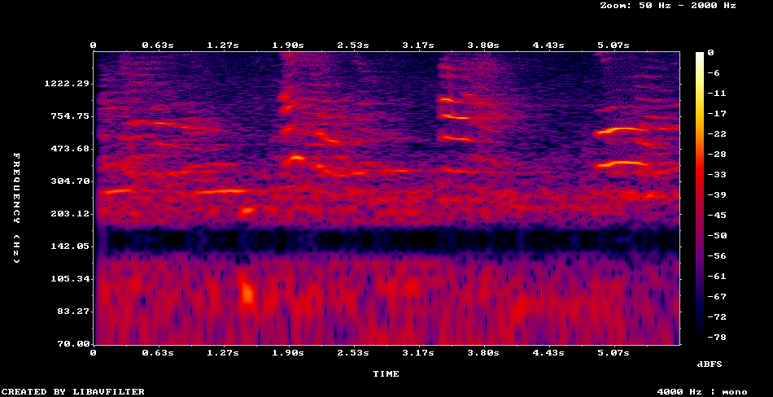
ta-21
Is there a held tone at B4 here, and is B4 its octave? The board microphone holds B4 +5 cents for 2.55 s; the room microphone (OBS) holds only the octave above.
Section 8b, consonants, bar 12 (from 2227 s); board 2227.42 to 2229.97 s, -30.2 dB. The tone starts 2 s into the clip. CHECK.md: "The tone is on the board but not confirmed by a second microphone, or its octave is not settled."
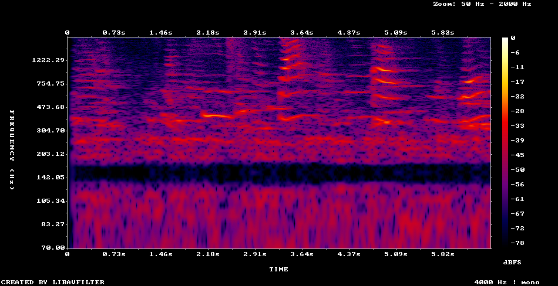
ta-22
Is there a held tone at B♭3 here, and is B♭3 its octave? The board microphone holds B♭3 −19 cents for 1.65 s; the room microphone (OBS) holds only the octave above.
Section 8c, consonants, bar 28 (from 2288 s); board 2288.62 to 2290.27 s, -27.6 dB. The tone starts 2 s into the clip. CHECK.md: "The tone is on the board but not confirmed by a second microphone, or its octave is not settled."
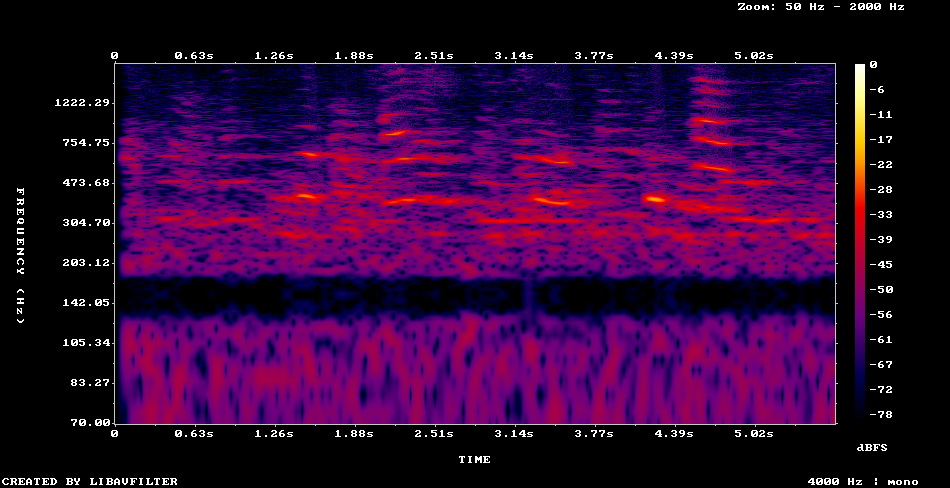
ta-23
Is there a held tone at G3 here, and is G3 its octave? The board microphone holds G3 +30 cents for 2.15 s; the room microphone (OBS) holds nothing there.
Section 9, vowels, bar 2 (from 2298 s); board 2301.37 to 2303.52 s, -26.5 dB. The tone starts 2 s into the clip. CHECK.md: "The tone is on the board but not confirmed by a second microphone, or its octave is not settled."
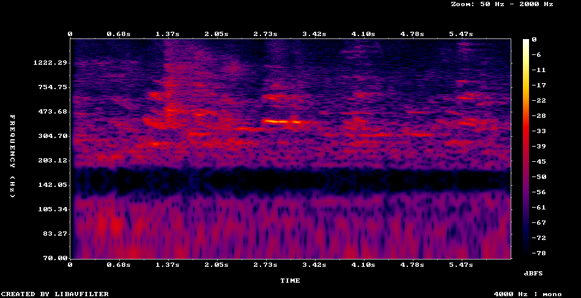
ta-24
Is there a held tone at G3 here, and is G3 its octave? The board microphone holds G3 +24 cents for 3.20 s; the room microphone (OBS) holds nothing there.
Section 9, vowels, bar 6 (from 2330 s); board 2335.72 to 2338.92 s, -30.4 dB. The tone starts 2 s into the clip. CHECK.md: "The tone is on the board but not confirmed by a second microphone, or its octave is not settled."
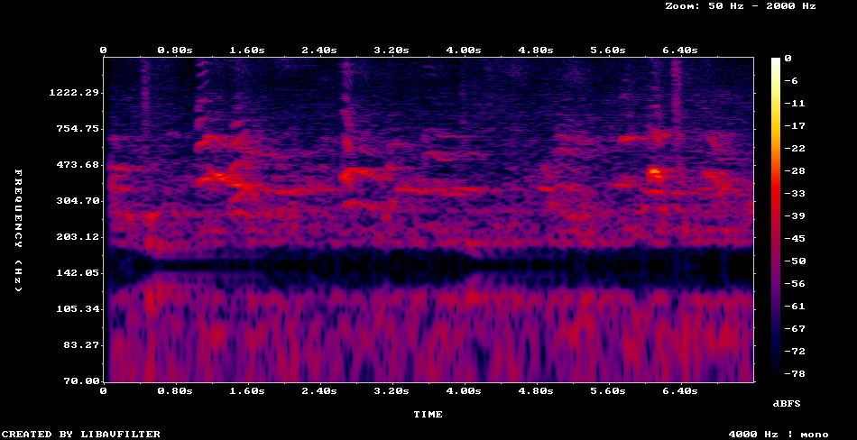
1b. Total Abstraction, 2023: spoken vowel or sung tone
ta-spoken-1
Is this A4 a spoken vowel held long, or a sung tone? Both microphones hold A4 −1 cents for 2.10 s.
Section 4, recitation, bar 12 (from 1922 s); board 1928.67 to 1930.77 s, -16.1 dB, confidence high. The tone starts 2 s into the clip. CHECK.md: "In the spoken sections (3-8c) a steady pitch may be a spoken vowel held long, rather than a sung tone. The machine cannot tell which."
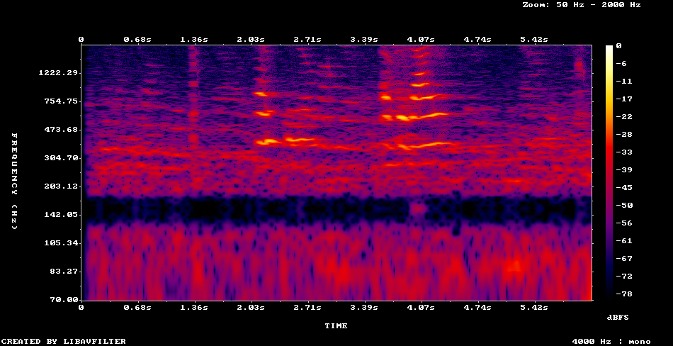
ta-spoken-2
Is this G♯4 a spoken vowel held long, or a sung tone? Both microphones hold G♯4 −40 cents for 1.85 s.
Section 4, recitation, bar 18 (from 1970 s); board 1976.27 to 1978.12 s, -20.7 dB, confidence high. The tone starts 2 s into the clip. CHECK.md: "In the spoken sections (3-8c) a steady pitch may be a spoken vowel held long, rather than a sung tone. The machine cannot tell which."
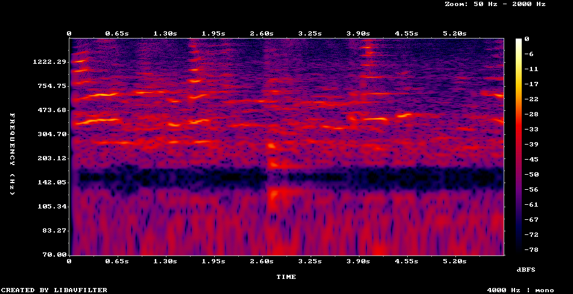
ta-spoken-3
Is this G3 a spoken vowel held long, or a sung tone? Both microphones hold G3 +43 cents for 2.55 s.
Section 6a, homophony, bar 12 (from 2110 s); board 2113.42 to 2115.97 s, -20.5 dB, confidence high. The tone starts 2 s into the clip. CHECK.md: "In the spoken sections (3-8c) a steady pitch may be a spoken vowel held long, rather than a sung tone. The machine cannot tell which."
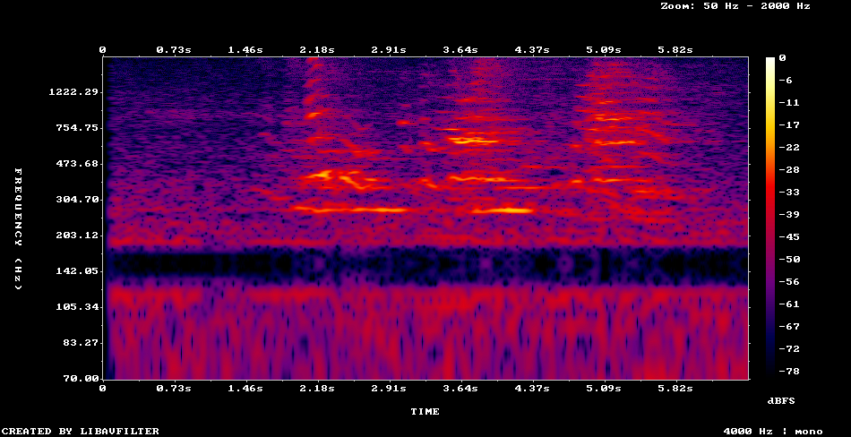
Eris and Rorty clips: private, see portfolio/listen/2026-11-27/ in the repo.
4. Excerpts: the Irvine playlist, the Chicago works, the UCSD scores
lovelong-start
Love Me (Long): is this the right start (0:00)?
Irvine playlist row 1, 0:00 to 5:03; Chicago uploads the WAV of the same length whole; UCSD links this mp3 whole. The clip runs from 2 s before the start (or the file's start) to 10 s after. No excerpt has been confirmed by ear (portfolio/PICKS.md, blocker 1: "Confirm every excerpt by ear").
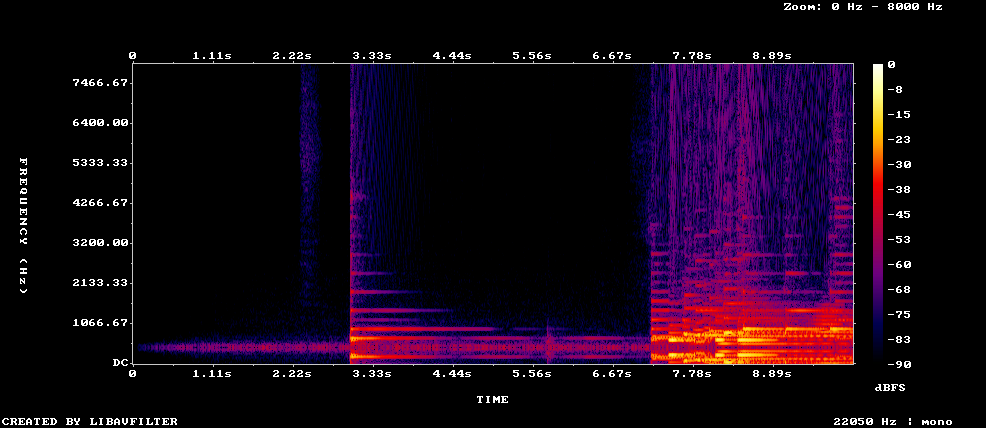
lovelong-end
Love Me (Long): is this the right end (5:03)?
Irvine playlist row 1, 0:00 to 5:03; Chicago uploads the WAV of the same length whole; UCSD links this mp3 whole. The clip runs from 10 s before the end to 2 s after (or the file's end). No excerpt has been confirmed by ear (portfolio/PICKS.md, blocker 1: "Confirm every excerpt by ear").
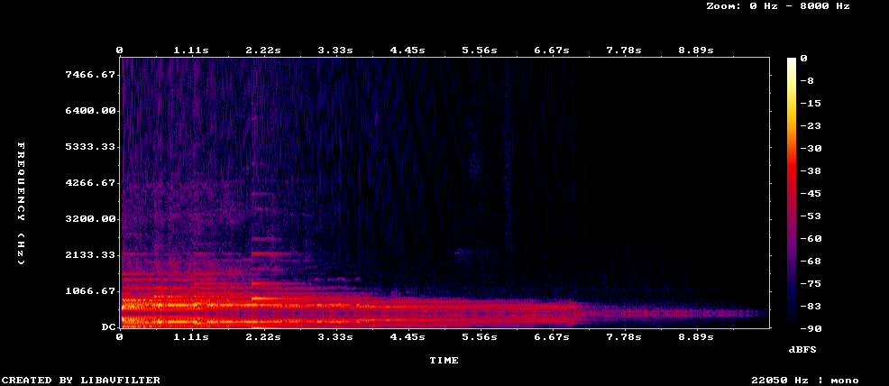
ta-excerpt-start
Total Abstraction, 2023 performance, the excerpt recording: is this the right start (0:00)?
Irvine playlist row 2, 0:00 to 3:40; Chicago uploads the WAV this mp3 was encoded from (the Mix, 10:20 to 14:00). The clip runs from 2 s before the start (or the file's start) to 10 s after. No excerpt has been confirmed by ear (portfolio/PICKS.md, blocker 1: "Confirm every excerpt by ear").
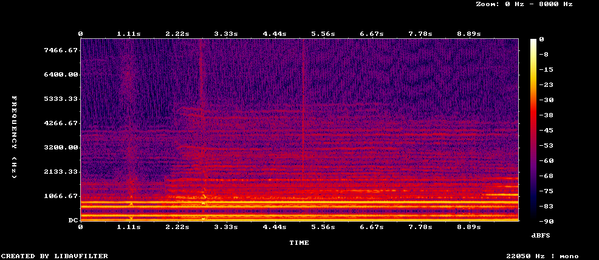
ta-excerpt-end
Total Abstraction, 2023 performance, the excerpt recording: is this the right end (3:40)?
Irvine playlist row 2, 0:00 to 3:40; Chicago uploads the WAV this mp3 was encoded from (the Mix, 10:20 to 14:00). The clip runs from 10 s before the end to 2 s after (or the file's end). No excerpt has been confirmed by ear (portfolio/PICKS.md, blocker 1: "Confirm every excerpt by ear").
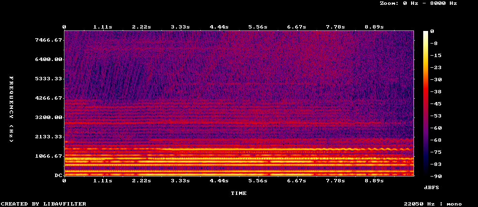
astro-uci-start
Astrocasper: is this the right start (7:20)?
Irvine playlist row 3, 7:20 to 8:50. The clip runs from 2 s before the start (or the file's start) to 10 s after. No excerpt has been confirmed by ear (portfolio/PICKS.md, blocker 1: "Confirm every excerpt by ear").
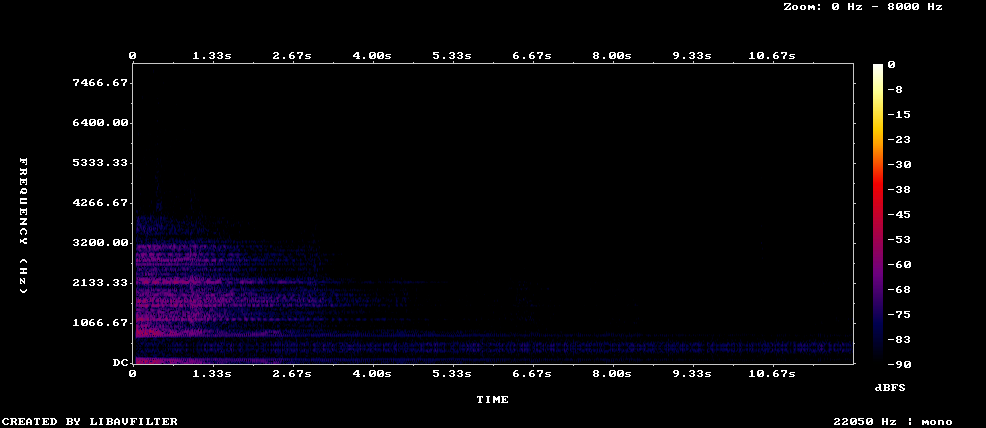
astro-uci-end
Astrocasper: is this the right end (8:50)?
Irvine playlist row 3, 7:20 to 8:50. The clip runs from 10 s before the end to 2 s after (or the file's end). No excerpt has been confirmed by ear (portfolio/PICKS.md, blocker 1: "Confirm every excerpt by ear").
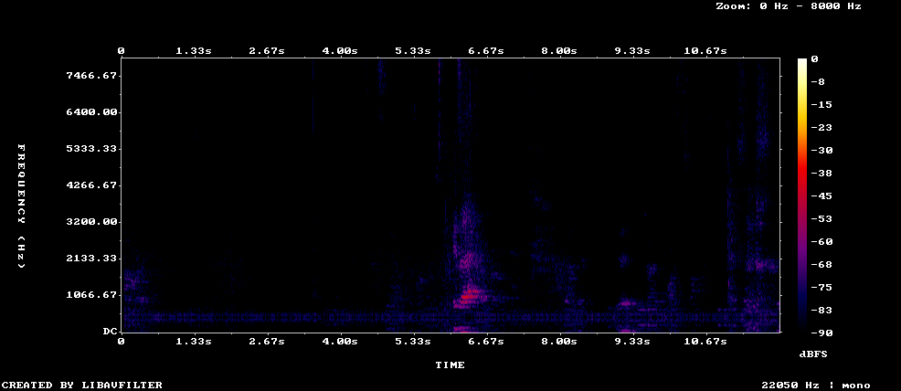
filmb-start
Film B (Abecedarian), Thank You Mr Richmond: is this the right start (0:00)?
Irvine playlist row 4, 0:00 to 2:00; Chicago uploads the same file (same bytes, apply/chicago/SUBMIT.md). The clip runs from 2 s before the start (or the file's start) to 10 s after. No excerpt has been confirmed by ear (portfolio/PICKS.md, blocker 1: "Confirm every excerpt by ear").
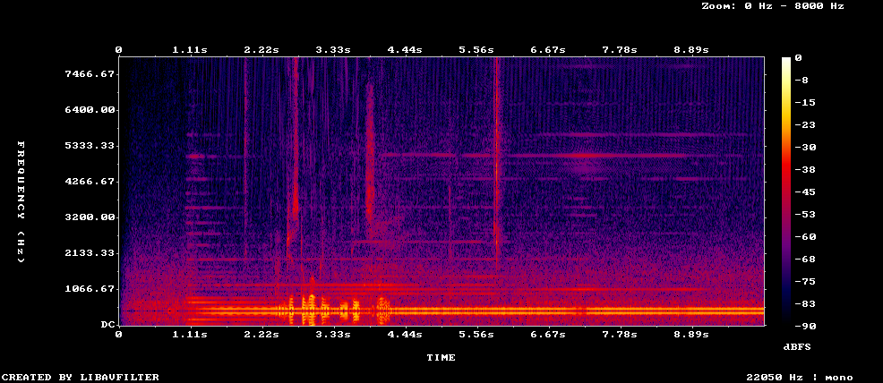
filmb-end
Film B (Abecedarian), Thank You Mr Richmond: is this the right end (2:00)?
Irvine playlist row 4, 0:00 to 2:00; Chicago uploads the same file (same bytes, apply/chicago/SUBMIT.md). The clip runs from 10 s before the end to 2 s after (or the file's end). No excerpt has been confirmed by ear (portfolio/PICKS.md, blocker 1: "Confirm every excerpt by ear").
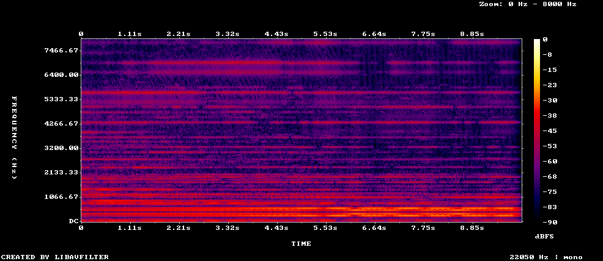
soke-uci-start
Soke: is this the right start (7:00)?
Irvine playlist row 5, 7:00 to 9:10. The clip runs from 2 s before the start (or the file's start) to 10 s after. No excerpt has been confirmed by ear (portfolio/PICKS.md, blocker 1: "Confirm every excerpt by ear").
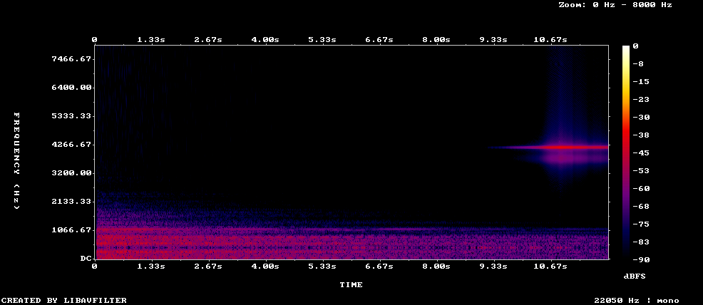
soke-uci-end
Soke: is this the right end (9:10)?
Irvine playlist row 5, 7:00 to 9:10. The clip runs from 10 s before the end to 2 s after (or the file's end). No excerpt has been confirmed by ear (portfolio/PICKS.md, blocker 1: "Confirm every excerpt by ear").
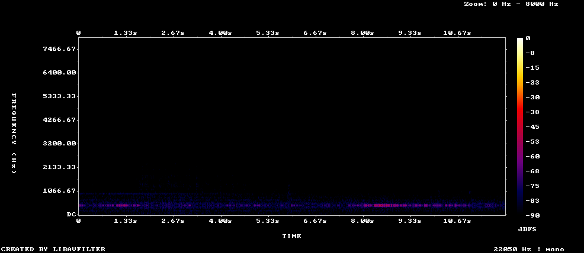
astro-whole-start
Astrocasper, whole: is this the right start (0:00)?
Chicago uploads the whole recording as a WAV of the same length (12:02); UCSD links this mp3 whole. The clip runs from 2 s before the start (or the file's start) to 10 s after. No excerpt has been confirmed by ear (portfolio/PICKS.md, blocker 1: "Confirm every excerpt by ear").
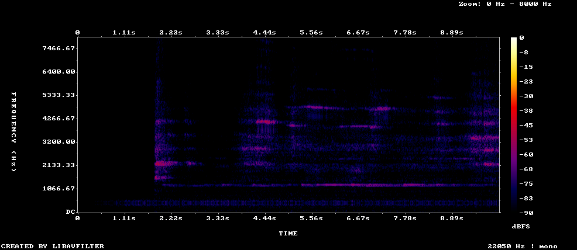
astro-whole-end
Astrocasper, whole: is this the right end (12:02)?
Chicago uploads the whole recording as a WAV of the same length (12:02); UCSD links this mp3 whole. The clip runs from 10 s before the end to 2 s after (or the file's end). No excerpt has been confirmed by ear (portfolio/PICKS.md, blocker 1: "Confirm every excerpt by ear").
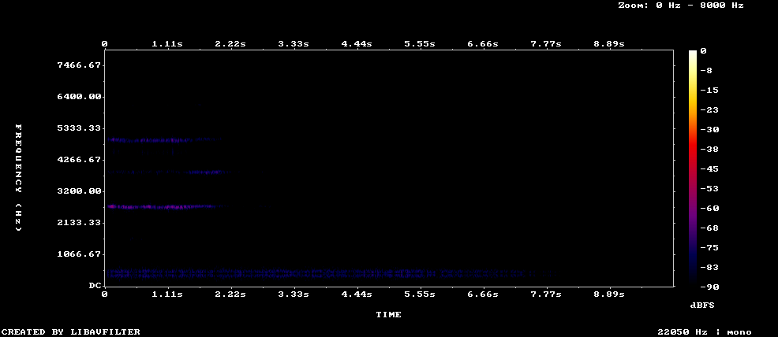
soke-whole-start
Soke, whole: is this the right start (0:00)?
UCSD links this mp3 whole (9:14). The clip runs from 2 s before the start (or the file's start) to 10 s after. No excerpt has been confirmed by ear (portfolio/PICKS.md, blocker 1: "Confirm every excerpt by ear").
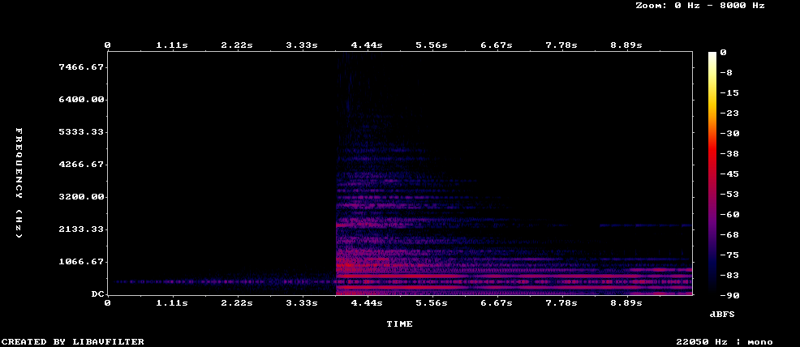
soke-whole-end
Soke, whole: is this the right end (9:14)?
UCSD links this mp3 whole (9:14). The clip runs from 10 s before the end to 2 s after (or the file's end). No excerpt has been confirmed by ear (portfolio/PICKS.md, blocker 1: "Confirm every excerpt by ear").
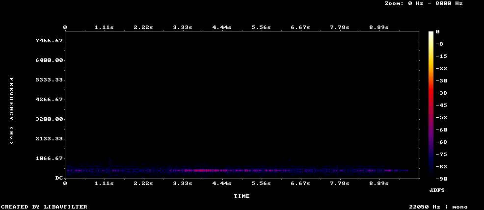
5. Irvine performance video: the candidates
uci-video-uplight
Which video goes in the Irvine section 2: the uplight edit (10:08), the Balcony stretch (10:10), or a tuba recording you hold that is not on this drive?
Option A, the uplight edit, 480p preview, 10:08: four continuous stretches of the 2023 Total Abstraction performance (apply/uci/portfolio.md section 2). Frames at 20, 50 and 80 percent; the clip is 10 s around the middle frame.
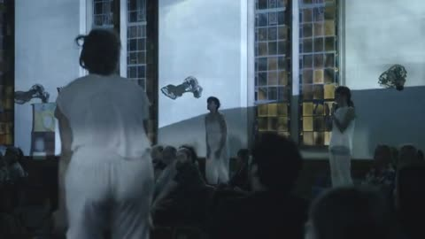
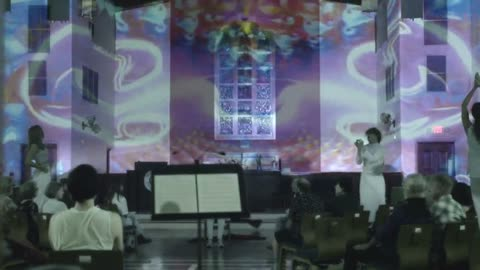
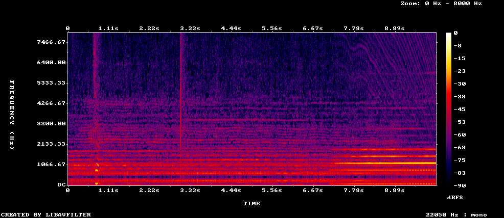
uci-video-balcony
Which video goes in the Irvine section 2: the uplight edit (10:08), the Balcony stretch (10:10), or a tuba recording you hold that is not on this drive?
Option B, the Balcony camera, one continuous stretch, 07:27 to 17:37 of the Balcony file, 10:10 (apply/uci/portfolio.md section 2). Frames at 20, 50 and 80 percent of the stretch; the clip is 10 s around the middle frame.
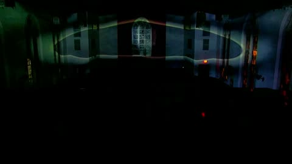
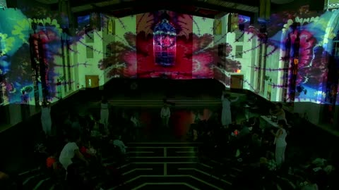
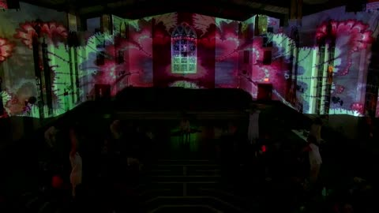
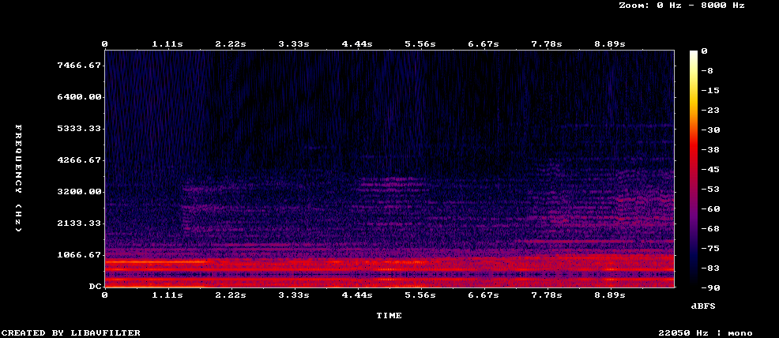
uci-video-v01
Is this you playing tuba or sousaphone, and is any ten minutes of it usable for Irvine?
Candidate v01 of portfolio/uci-video-candidates.md (agent inventory, 2026-11-27): FUUNO church band folder, 44:05; frames read: a church band, electric bass, guitars, ukulele, a singer. The inventory found no tuba player in any frame it read. Frames at 20, 50 and 80 percent; the clip is 10 s around the middle frame.
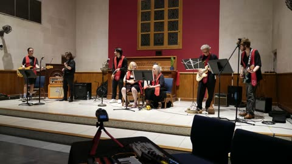
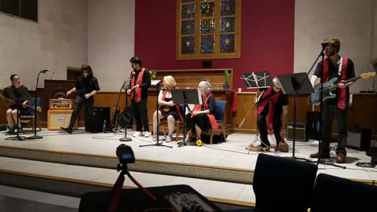
uci-video-v02
Is this you playing tuba or sousaphone, and is any ten minutes of it usable for Irvine?
Candidate v02 of portfolio/uci-video-candidates.md (agent inventory, 2026-11-27): the Total Abstraction balcony camera, 2023, 19:26 (the whole file; option B is a stretch of it). The inventory found no tuba player in any frame it read. Frames at 20, 50 and 80 percent; the clip is 10 s around the middle frame.
uci-video-v03
Is this you playing tuba or sousaphone, and is any ten minutes of it usable for Irvine?
Candidate v03 of portfolio/uci-video-candidates.md (agent inventory, 2026-11-27): phone video, 2025-02-05, 18:14; frames near-black or blurred; its audio track has not been heard, so what it records is unknown. The inventory found no tuba player in any frame it read. Frames at 20, 50 and 80 percent; the clip is 10 s around the middle frame.
uci-video-v04
Is this you playing tuba or sousaphone, and is any ten minutes of it usable for Irvine?
Candidate v04 of portfolio/uci-video-candidates.md (agent inventory, 2026-11-27): the 2020 Total Abstraction work session, 12:36. The inventory found no tuba player in any frame it read. Frames at 20, 50 and 80 percent; the clip is 10 s around the middle frame.
uci-video-v05
Is this you playing tuba or sousaphone, and is any ten minutes of it usable for Irvine?
Candidate v05 of portfolio/uci-video-candidates.md (agent inventory, 2026-11-27): phone video, 2022-09-22, 11:38; frames read: a washing machine lid. The inventory found no tuba player in any frame it read. Frames at 20, 50 and 80 percent; the clip is 10 s around the middle frame.
uci-video-v11
Is this you playing tuba or sousaphone, and is any ten minutes of it usable for Irvine?
Candidate v11 of portfolio/uci-video-candidates.md (agent inventory, 2026-11-27): the Siddhartha processional, 5:10. The inventory found no tuba player in any frame it read. Frames at 20, 50 and 80 percent; the clip is 10 s around the middle frame.
uci-video-v12
Is this you playing tuba or sousaphone, and is any ten minutes of it usable for Irvine?
Candidate v12 of portfolio/uci-video-candidates.md (agent inventory, 2026-11-27): FUUNO band, 4:12; the same chancel and band as v01. The inventory found no tuba player in any frame it read. Frames at 20, 50 and 80 percent; the clip is 10 s around the middle frame.
uci-video-v13
Is this you playing tuba or sousaphone, and is any ten minutes of it usable for Irvine?
Candidate v13 of portfolio/uci-video-candidates.md (agent inventory, 2026-11-27): Traveling Cadavers at DC9, 19:50; frames read: guitars, bass, drums, a singer. The inventory found no tuba player in any frame it read. Frames at 20, 50 and 80 percent; the clip is 10 s around the middle frame.